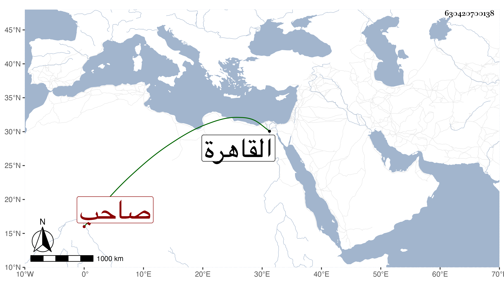

0902Sakhawi.DawLamic.ITO20230111-ara1.EIS1600.630420700138
Biography ID: 630420700138
471
عبد الرحيم بن محمد بن عبد الله بن بكتمر الزيني بن ناصر الدين ابن جمال الدين بن الأمير الحاجب صاحب المدرسة والدار المجاورة لها بباب النصر ووالد عبد الرحمن الماضي وعبد الله وألف ، ويعرف كسلفه بابن الحاجب من بيت رياسة وحشمة وله هو وجاهة متوسطة في الدولة . مات قبيل الخمسين بالقاهرة وكانت له أخبار جمة في الوسواس وتطهير الثياب والأواني خارجة عن الحد فيها ما يضحك منه وتبعه ابنه ولكن لم يبلغ مبلغه ، وقد ترجمته في سنة ثلاث وخمسين من التبر المسبوك .
